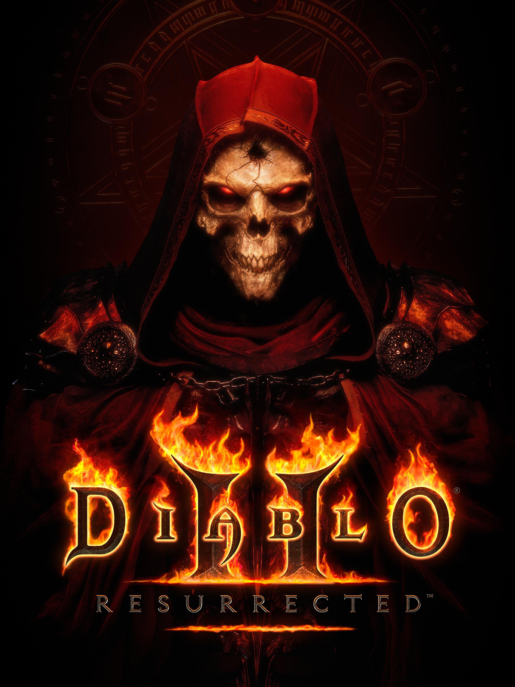

디아블로 II: 레저렉션
블리자드 엔터테인먼트가 2021년 9월 24일 출시한
액션 RPG 디아블로 시리즈 디아블로 2(2000)의 리마스터판.
스타크래프트: 리마스터, 워크래프트 3: 리포지드가 클래식과 통합되었던 전례와 다르게, 기존의 클래식 디아블로 2는 그대로 유지되고 디아블로 2: 레저렉션은 별도의 게임으로 서비스된다.
기본 베이스가 명작인 게임이기에 게임을 하는 플레이어가 디아블로 2의 불편한 인터페이스를 어느정도 감수할 수 있다면 2021년에도 충분히 플레이 해 볼 만한 게임이다.
또한 기존 디아블로 2 플레이 경험은 있으나 디아블로 2 후반기, 룬어 아이템과 래더가 추가된 이후의 버전을 플레이하지 않은 사람들의 경우에도 디아블로 2를 지속적으로 플레이 한 고인물 유저들의 각종 룬 아이템 및 캐릭터 육성 방법 등의 가이드라인을 참고하여 충분히 색다른 경험을 할 수 있는 기반 또한 마련되어 있다
